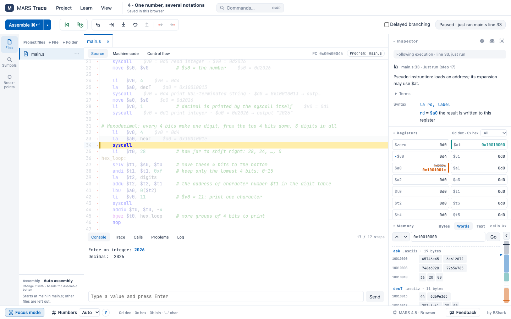
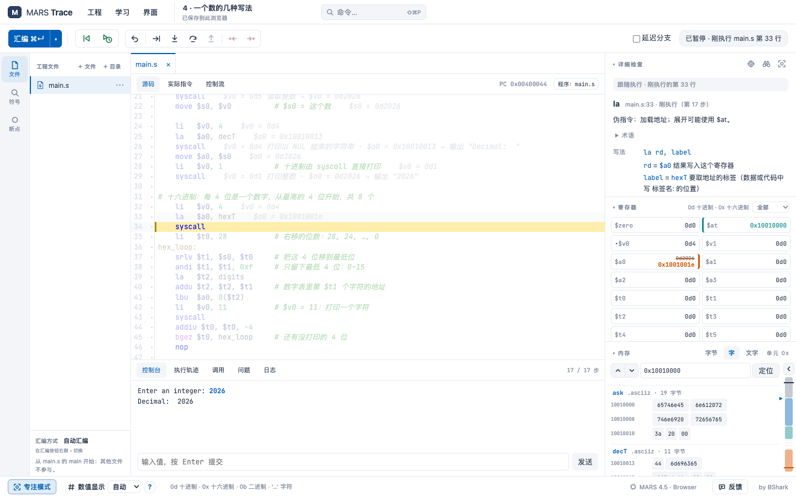

单步，也能回退Step forward, and back
走过头了就退回去。每一步改了哪个寄存器、哪块内存都会标出来，不用再靠猜。Went one step too far? Go back. Every step marks the registers and memory it changed, so nobody has to guess.
MIPS · MARS 4.5 · 浏览器运行runs in your browser
基于 MARS 4.5 的教学 IDE。汇编、单步、回退，看清每条指令改了哪个寄存器、哪块内存。全部在你的浏览器里运行：不用装 Java，不用注册。 A teaching IDE built on MARS 4.5. Assemble, step and rewind, and see exactly which register and which bytes each instruction changed. It all runs in your browser: no Java to install, no sign-up.
免费 · 开源 · 程序和文件只存在你的浏览器里Free · open source · your programs stay in your browser
li $t0 , 5 li $t1 , 7 addu $t2 , $t0 , $t1 sw $t2 , 0 ($sp )[7fffeffc] ← 12bgtz $t2 , done跳转taken → done

走过头了就退回去。每一步改了哪个寄存器、哪块内存都会标出来，不用再靠猜。Went one step too far? Go back. Every step marks the registers and memory it changed, so nobody has to guess.
代码、数据、堆和栈画在一张图上：每个栈帧保存了哪些寄存器、$sp 和 $fp 在哪，点一下就跳过去。Code, data, heap and stack on one map: each stack frame with its saved registers, where $sp and $fp point, one click to jump there.
只看眼前这一步：刚才做了什么，接下来可能走哪条路。分支和循环一下子清楚了。Just the step in front of you: what it did, and where the program may go next. Branches and loops stop being a mystery.
语法错误直接标在代码旁边，并说明原因和改法。悬停任何指令或寄存器都能看到解释。Mistakes are marked right next to the code, with why and how to fix them. Hover any instruction or register for an explanation.
还有：中英双语界面 · 内置示例程序 · 文件读写 syscall · 断点与观察 · 工程导入导出Also: English and Chinese interface · built-in examples · file I/O syscalls · breakpoints and watches · project import and export
想在课上用，或者需要什么功能？我很想听听你的课是怎么上的。Thinking of using it in class, or missing something? I would love to hear how you teach this.
联系我Get in touch